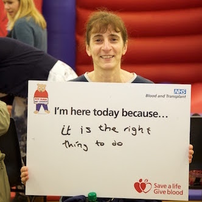
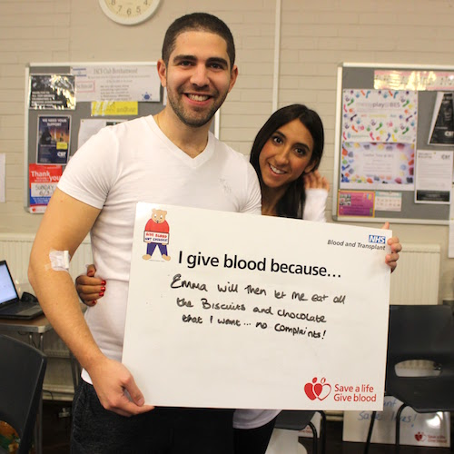
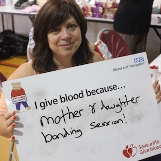
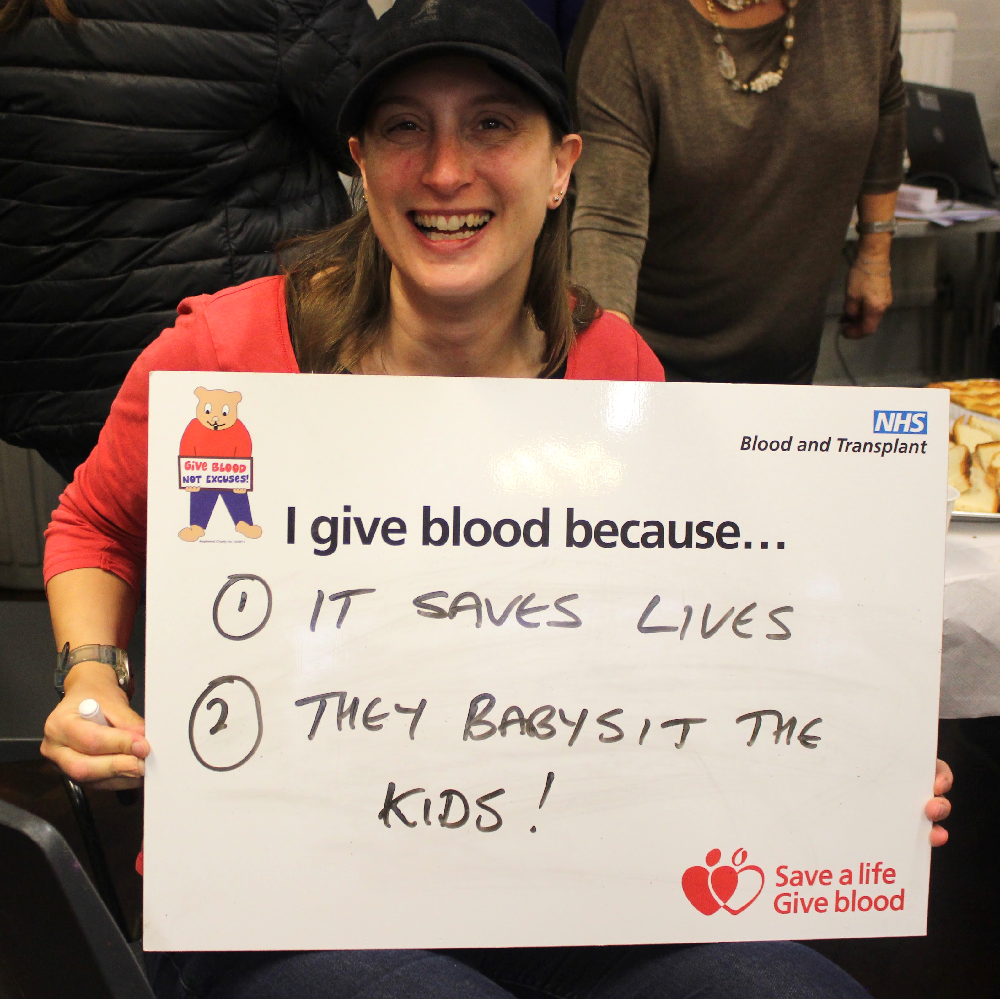

---
redirect_from:
 - /md2016
 - /mitzvahday
 layout: default
 title: Mitzvah Day 2016!
 description: Save lives with Joely Bear this Mitzvah Day! Community blood donor sessions being held in Borehamwood and Edgware.
---
  <div class="container">
    <!-- START THE CONTENT -->
    <div class="container">
      <div class = "row">
        <h1>New Mitzvah Day 2016</h1>

        <p class = "lead">This Mitzvah Day, The Joely Bear Appeal would like to invite you to Give Blood and Save Lives!</p>
      </div>
      <div class = "row">
        <div class="col-xs-6 col-sm-4 col-md-3">
          <div class="thumbnail">
            
          </div>
        </div>

        <div class="hidden-xs hidden-sm col-md-3">
          <div class="thumbnail">
            
          </div>
        </div>

        <div class="col-xs-6 col-sm-4 col-md-3">
          <div class="thumbnail">
            
          </div>
        </div>
        <div class="hidden-xs col-sm-4 col-md-3">
          <div class="thumbnail">
            
          </div>
        </div>
      </div>
      <div class = "row">

        <p>Alongside our usual Borehamwood session, we'll be running a special Mitzvah Day blood donor session in Edgware at the same time! All of the family are encouraged to join us – as usual we’ll be providing a fully <strong>supervised crèche</strong>, <strong>bouncy castle</strong> and <strong>face painting</strong> as well as plenty of free <strong>kosher refreshments</strong>.  Most people can give blood, yet only 4% of the able population actually do.
        </p>

        <p>If you are in good health, aged 17 to 65  and weigh at least 7st 12lb you can donate. You can give blood every 16 weeks, that’s approximately every four months.  Within two weeks of Mitzvah Day, the blood donated there will have been put to essential, life saving use. Whether this is in routine or emergency surgery, treatments for cancer and many other major illnesses and diseases. Without blood donors, these surgeries and treatments would not be possible.
        </p>

        <p> The need for regular blood donors cannot be stressed too highly. Everyone expects blood to be available whenever it’s required, whether for surgery or for treating patients with other illnesses especially cancer. Unfortunately only one in twenty of the population who are able to be donors actually give blood regularly and the appeal is active in promoting the importance of doing so. By running three blood donor sessions each year and creating a supportive, family atmosphere at our sessions we encourage all those who are able to contribute.
        </p>
        <div class="jumbotron">
          <h3>Venue Details (and how to book!)</h3>
          <ul>
            <li><strong>Edgware Community Hospital</strong>, 8:20 - 16:30.
              <ul>
                <li>Email <a href="mailto:mitzvahday@joelybear.org.uk?subject=Mitzvah Day 2016 - Blood Donor Appointment&body=I'd like to book an appointment to give blood at Edgware Community Hospital with The Joely Bear Appeal for Mitzvah Day. My preferred times are between (8:20) and (16:30) .">mitzvahday@joelybear.org.uk</a> to book your appointment.
                </li>
                <li>Join the <a href="https://www.facebook.com/events/1070113019753386/" target = "_blank">Facebook Event</a>.</li>
              </ul>
            </li>
            <li><strong>Borehamwood &amp; Elstree Synagogue</strong>, 9:15 - 12:15 &amp; 14:00 - 16:30.
              <ul>
                <li>We do not have any remaining pre-bookable appointments for Borehamwood. There will be plenty of 'walk-in' slots available throughout the day, however we'd recommend booking for Edgware Donor Centre where possible.</li>
                <li>Join the <a href="https://www.facebook.com/events/152637498475663/" target = "_blank">Facebook Event</a>.</li>
              </ul>
            </li>
          </ul>
          <p><em>'Walk in' slots will be available at both sessions, however we'd recommend booking ahead where possible</em></p>
        </div>
      </div>
      <div class = "row">
        <p>Unable to donate? Volunteer to help us with refreshments, security, ‘meet n greet’ or in the crèche! Email volunteers@joelybear.org.uk to find out more.
        </p>
        <h4>About Mitzvah Day</h4>
        <p> Mitzvah Day is an annual day of social action organised by the Jewish community. </p>
        <blockquote>On Mitzvah Day, we give our time, not our money, to make a difference to the community around us. We introduce people to social action, to their neighbours and to local charities setting up projects which address real needs. Jewish led, we bring  people of other faiths, and none to volunteer side by side, with fun and laughter,  with our community,  to get to know each other.
        </blockquote>
        <p>Find out more about Mitzvah Day at <a href = "http://www.mitzvahday.org.uk">www.mitzvahday.org.uk</a>.
      </div>
    </div><!-- /.container -->
